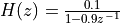

XLAUDIO Library¶
XLAUDIO_LIB is a support library that offers support for flexible input/output in a real-time DSP application. The library was specifically designed for this course and can be consulted on github.
The following list is a list of the public functions defined in this library.
System Initialization Functions
System Initialization when no A/D, D/A is needed
System Initialization for polling A/D, D/A
System Initialization for timer-driven A/D, D/A
System Initialization for block-based A/D, D/A
System Evaluation Functions
Continuous System Evaluation
One-time Performance Evaluation (poll/interrupt mode)
One-time Performance Evaluation (dma mode)
One-time Performance Evaluation (dma mode)
Buttons and LEDs
Turns off left red led on Launchpad
Turns on left red led on Launchpad
Turns off right led on Launchpad
Sets right led on Launchpad to green color
Sets right led on Launchpad to blue color
Reads Launchpad Left Button Status
Reads Launchpad Left Button Status
Reads Launchpad Right Button Status
Reads Launchpad Right Button Status
Header Pin Control
Sets Launchpad Debug Pin to High State
Sets Launchpad Debug Pin to Low State
Data Type Conversion
ADC14 samples to Q15 fixed point sample
ADC14 samples to Q15 fixed point buffer
ADC14 samples to Q31 fixed point sample
ADC14 samples to Q31 fixed point buffer
ADC14 samples to single-precision floating point sample
ADC14 samples to single-precision floating point buffer
Q15 fixed point to DAC14 samples sample
Q15 fixed point to DAC14 samples buffer
Q31 fixed point to DAC14 samples sample
Q31 fixed point to DAC14 samples buffer
Single-precision floating point to DAC14 samples
Single-precision floating point to DAC14 samples buffer
Real Time Functions
Delays execution by a given number of CPU cycles
xlaudio_init()¶
This function configures the processor clock of the ARM Cortex M4 to 48MHz. The function can be used when neither D/A nor A/D conversions are required.
The following subsystems are configured by this call.
Clock subsystem
Error LED (Used by
xlaudio_errorled..()calls)Color LED (Used by
xlaudio_colorled..()calls)Push Buttons (Used by
xlaudio_pushButton..()calls)Dutycycle IO pin 5.7 (Used by DMA subsystem)
Debug IO pin 3.5 (Used by
xlaudio_debugpin..())
#include ^xlaudio_init.h^
void xlaudio_init();
xlaudio_init_poll()¶
This function configures the processor clock of the ARM Cortex M4 to 48MHz, turns on the microphone, and initializes the hardware in polling mode. In polling mode, the following steps are repeated as fast as the hardware allows: (1) An A/D conversion from a user-defined sources is completed, (2) a user-defined call-back function is executed with the converted sample as argument, (3) the value returned by the user-defined call-back function is forwarded to the D/A. The speed of A/D conversions is limited due to the speed of the successive approximation ADC in the MSP432. The speed of the D/A conversions is limited by the SPI connection between the MSP432 and the off-chip DAC8331.
The following subsystems are configured by this call.
All subsystems listed under xlaudio_init()
The DAC8311 chip on the BOOSTXL-AUDIO board
The BOOSTXL-AUDIO amplifier on the BOOSTXL-AUDIO board
One of the following depending on the value of the
_audioinparameterThe BOOSTXL-AUDIO microphone preamp on the BOOSTXL-AUDIO board
Input pin 1.2 on the BOOSTXL header
The ADC14 inside of the MSP432
#include ^xlaudio_init.h^
void xlaudio_init_poll(XLAUDIO_IN_enum_t _audioin,
xlaudio_sample_process_t _cb
);
xlaudio_in_enum_t _audioinindicates the source used by the ADC converter, and is one of the following selections.XLAUDIO_MIC_INthe source signal is taken from the BOOSTXL board microphoneXLAUDIO_J1_2_INthe source signal is taken from pin 2 of header J1
xlaudio_sample_process_t _cbis a pointer to the callback function called after ADC conversion. The callback function reads a 16-bit unsigned integer and returns a 16-bit unsigned integer, i.e.typedef uint16_t (*xlaudio_sample_process_t)(uint16_t);
xlaudio_init_intr()¶
This function configures the processor clock of the ARM Cortex M4 to 48MHz, turns on the microphone, and initializes the hardware in interrupt mode. In interrupt mode, a hardware timer is set to expire at a user-defined sample rate. When the hardware timer expires, an A/D conversion from a user-defined source is started. When the A/D conversion completes, a user-defined call-back function is called as part of the A/D interrupt service routine. The value returned from the user-defined call-back function is forwarded to the D/A. The audio processing thus proceeds at the user-defined sample rate. However, for correct operation, the processing time per sample must be smaller than the sample period. The processing time per sample is the sum of the execution time of the user-defined call-back function plus the time to make a D/A conversion. When the processing time per sample exceeds this sum, a timer interrupt will be lost and the sampling process will no longer reach the selected user-defined sample rate.
The following subsystems are configured by this call.
All subsystems listed under xlaudio_init_poll()
A Timer-driven periodic ISR to drive DAC conversions at the selected sample rate
An ADC-driven ISR to capture the completed conversions
#include ^audioxl.h^
void msp432_boostxl_init_intr(FS_enum_t _fs,
BOOSTXL_IN_enum_t _audioin,
msp432_sample_process_t _cb
);
FS_enum_t _fsselects the sample rate for the A/D and D/A conversion process.FS_8000_HZselects a sample rate of 8,000 HzFS_11025_HZselects a sample rate of 11,025 HzFS_16000_HZselects a sample rate of 16,000 HzFS_22050_HZselects a sample rate of 22,050 HzFS_24000_HZselects a sample rate of 24,000 HzFS_32000_HZselects a sample rate of 32,000 HzFS_44100_HZselects a sample rate of 44,100 HzFS_48000_HZselects a sample rate of 48,000 Hz
xlaudio_in_enum_t _audioinindicates the source used by the ADC converter, and is one of the following selections.XLAUDIO_MIC_INthe source signal is taken from the BOOSTXL board microphoneXLAUDIO_J1_2_INthe source signal is taken from pin 2 of header J1
xlaudio_sample_process_t _cbis a pointer to the callback function called after ADC conversion. The callback function reads a 16-bit unsigned integer and returns a 16-bit unsigned integer, i.e.typedef uint16_t (*xlaudio_sample_process_t)(uint16_t);
xlaudio_init_dma()¶
This function configures the processor clock of the ARM Cortex M4 to 48MHz, turns on the microphone, and initializes the hardware in DMA mode. In DMA mode, a hardware timer is set to expire at a user-defined sample rate. When the hardware timer expires, an A/D conversion from a user-defined source is started. When the A/D conversion completes, the sample is copied by a Direct Memory Access (DMA) module into a buffer. When a user-defined number of samples are gathered in the buffer, a user-defined call-back is called to process a block of samples. The user-defined call-back function returns a block of samples from the same size. In dma mode, a hardware timer interrupt is then used to copy these output samples to the D/A module, one sample at a time. The DMA mode uses ping-pong buffers to keep the sampling process and the data processing apart. There are two pairs of ping-pong buffers: one pair is associated with the A/D conversion, and a second pair is associated with the D/A conversion.
The following subsystems are configured by this call.
All subsystems listed under xlaudio_init_poll()
A Timer-driven ISR to start ADC conversions at the selected sample rate
A DMA-driven ISR to switch between ping-pong buffer channels
#include "xlaudio.h"
void xlaudio_dma (fs_enum_t _fs,
xlaudio_in_enum_t _audioin,
buflen_enum_t _pplen,
xlaudio_buffer_process_t _cb
);
fs_enum_t _fsselects the sample rate for the A/D and D/A conversion process.FS_8000_HZselects a sample rate of 8,000 HzFS_11025_HZselects a sample rate of 11,025 HzFS_16000_HZselects a sample rate of 16,000 HzFS_22050_HZselects a sample rate of 22,050 HzFS_24000_HZselects a sample rate of 24,000 HzFS_32000_HZselects a sample rate of 32,000 HzFS_44100_HZselects a sample rate of 44,100 HzFS_48000_HZselects a sample rate of 48,000 Hz
boostxl_in_enum_t _audioinindicates the source used by the ADC converter, and is one of the following selections.BOOSTXL_MIC_INthe source signal is taken from the BOOSTXL board microphoneBOOSTXL_J1_2_INthe source signal is taken from pin 2 of header J1
buflen_enum_t _pplenselects the size of the DMA ping-pong buffer.BUFLEN_8selects a buffer size of 8 samples (for each ping buffer and each pong buffer)BUFLEN_16selects a buffer size of 16 samples (for each ping buffer and each pong buffer)BUFLEN_32selects a buffer size of 32 samples (for each ping buffer and each pong buffer)BUFLEN_64selects a buffer size of 64 samples (for each ping buffer and each pong buffer)BUFLEN_128selects a buffer size of 128 samples (for each ping buffer and each pong buffer)
xlaudio_buffer_process_t _cbis a pointer to the callback function called after the ping-pong buffers have filled up. The calllback function has typetypedef void (*xlaudio_buffer_process_t)(uint16_t *, uint16_t *)and takes two arguments. The first argument is a pointer to the input buffer of_pplenelements of typeuint16_t. The second argument is a pointer to the output buffer of_pplenelements of typeuint16_t. The callback function returns void.
xlaudio_run()¶
This function starts the conversion process. Before calling this function the user must call one of the following initialization functions.
xlaudio_init_poll()for polling mode conversionxlaudio_init_intr()for interrupt mode conversionxlaudio_init_dma()for dma mode conversion
#include "xlaudio.h"
void xlaudio_run();
xlaudio_measurePerfSample()¶
This function measures the median execution time, counted in clock cycles, of a sample-based callback function such as used in polled mode and in interrupt mode. The measurement process proceeds as follows. The callback function is called 11 times, using a dummy (0) input argument. The return value of the callback function is ignored, and it is not forwarded to the D/A. Each of the 11 executions are measured using a hardware timer. The resulting set of cycle counts is sorted and the median (middle) element is returned. The measurement function adjusts the result and subtracts measurement overhead.
#include "xlaudio.h"
uint32_t measurePerfSample(xlaudio_sample_process_t _cb);
xlaudio_sample_process_t _cbis a pointer to the callback function called after ADC conversion. The callback function reads a 16-bit unsigned integer and returns a 16-bit unsigned integer, i.e.typedef uint16_t (*xlaudio_sample_process_t)(uint16_t);
xlaudio_measurePerfBuffer()¶
This function measures the median execution time, counted in clock cycles, of a buffer-based callback function such as used in dma mode. The measurement process proceeds as follows. The callback function is called 11 times, using a dummy input buffer of zeroes. The return buffer is ignored, and it is not forwarded to the D/A. Each of the 11 executions are measured using a hardware timer. The resulting set of cycle counts is sorted and the median (middle) element is returned. The measurement function adjusts the result and subtracts measurement overhead.
#include "xlaudio.h"
uint32_t measurePerfBuffer(xlaudio_buffer_process_t _cb);
xlaudio_buffer_process_t _cbis a pointer to the callback function called after the ping-pong buffers have filled up. The calllback function has typetypedef void (*xlaudio_buffer_process_t)(uint16_t *, uint16_t *)and takes two arguments. The first argument is a pointer to the input buffer of_pplenelements of typeuint16_t. The second argument is a pointer to the output buffer of_pplenelements of typeuint16_t. The callback function returns void.
xlaudio_errorledoff()¶
This function turns off the left LED of the MSPEXP432P401R board.
#include "xlaudio.h"
void xlaudio_errorledoff();
xlaudio_errorledon()¶
This function turns on left LED of the MSPEXP432P401R board.
#include "xlaudio.h"
void xlaudio_errorledon();
xlaudio_colorledred()¶
This function sets the right LED of the MSPEXP432P401R board to a red color.
#include "xlaudio.h"
void xlaudio_colorledred();
xlaudio_colorledblue()¶
This function sets the right LED of the MSPEXP432P401R board to a blue color.
#include "xlaudio.h"
void xlaudio_colorledblue();
xlaudio_colorledgreen()¶
This function sets the right LED of the MSPEXP432P401R board to a green color.
#include "xlaudio.h"
void xlaudio_colorledgreen();
xlaudio_colorledoff()¶
This function turns off the right LED of the MSPEXP432P401R board.
#include "xlaudio.h"
void xlaudio_colorledoff();
xlaudio_debugpinhigh()¶
This function sets the debug IO pin (3.5) on the BOOSTXL header high.
#include "xlaudio.h"
void xlaudio_debugpinhigh();
xlaudio_debugpinlow()¶
This function sets the debug IO pin (3.5) on the BOOSTXL header low.
#include "xlaudio.h"
void xlaudio_debugpinlow();
xlaudio_pushButtonLeftUp()¶
This function returns true when the left button on the MSPEXP432P401R board is released.
#include "xlaudio.h"
int xlaudio_pushButtonLeftUp();
xlaudio_pushButtonLeftDown()¶
This function returns true when the left button on the MSPEXP432P401R board is depressed.
#include "xlaudio.h"
int xlaudio_pushButtonLeftDown();
xlaudio_pushButtonRightUp()¶
This function returns true when the right button on the MSPEXP432P401R board is released.
#include "xlaudio.h"
int xlaudio_pushButtonRightUp();
xlaudio_pushButtonRightDown()¶
This function returns true when the right button on the MSPEXP432P401R board is depressed.
#include "xlaudio.h"
int xlaudio_pushButtonRightDown();
xlaudio_adc14_to_q15()¶
This function converts a 14-bit ADC value to a fixed-point fix<16,15> Q15 value. The encoded range spans [-0.25,0.25] corresponding to the analog range [0v, 3v3].
#include "xlaudio_armdsp.h"
q15_t xlaudio_adc14_to_q15(uint16_t v);
xlaudio_adc14_to_q15_vec()¶
This function converts a 14-bit ADC buffer to a fixed-point fix<16,15> Q15 buffer. The encoded range spans [-0.25,0.25] corresponding to the analog range [0v, 3v3].
#include "xlaudio_armdsp.h"
void xlaudio_adc14_to_q15_vec(const uint16_t *v, q15_t *q, uint32_t sz);
xlaudio_adc14_to_q31()¶
This function converts a 14-bit ADC value to a fixed-point fix<32,31> Q31 value. The encoded range spans [-0.25,0.25] corresponding to the analog range [0v, 3v3].
#include "xlaudio_armdsp.h"
q31_t xlaudio_adc14_to_q31(uint16_t v);
xlaudio_adc14_to_q31_vec()¶
This function converts a 14-bit ADC buffer to a fixed-point fix<32,31> Q31 buffer. The encoded range spans [-0.25,0.25] corresponding to the analog range [0v, 3v3].
#include "xlaudio_armdsp.h"
void xlaudio_adc14_to_q31_vec(const uint16_t *v, q31_t *q, uint32_t sz);
xlaudio_adc14_to_f32()¶
This function converts a 14-bit ADC value to a single-precision floating point value. The encoded range spans [-0.25,0.25] corresponding to the analog range [0v, 3v3].
#include "xlaudio_armdsp.h"
float32_t xlaudio_adc14_to_f32(uint16_t v);
xlaudio_adc14_to_f32_vec()¶
This function converts a 14-bit ADC buffer to a single-precision floating point buffer. The encoded range spans [-0.25,0.25] corresponding to the analog range [0v, 3v3].
#include "xlaudio_armdsp.h"
void xlaudio_adc14_to_f32_vec(const uint16_t *v, float32_t *q, uint32_t sz);
xlaudio_q15_to_dac14()¶
This function converts a fixed-point fix<16,15> Q15 value to a 14-bit DAC value. The analog range spans [0v, 3v3] corresponding to range [-0.25,0.25].
#include "xlaudio_armdsp.h"
uint16_t xlaudio_q15_to_dac14(q15_t v);
xlaudio_q15_to_dac14_vec()¶
This function converts a fixed-point fix<16,15> Q15 value to a 14-bit DAC value. The analog range spans [0v, 3v3] corresponding to range [-0.25,0.25].
#include "xlaudio_armdsp.h"
void xlaudio_q15_to_dac14_vec(const q15_t *v, uint16_t *q, uint32_t sz);
xlaudio_q31_to_dac14()¶
This function converts a fixed-point fix<32,31> Q31 value to a 14-bit DAC value. The analog range spans [0v, 3v3] corresponding to range [-0.25,0.25].
#include ^xlaudio_arm_dsp.h^
uint16_t xlaudio_q31_to_dac14(q31_t v);
xlaudio_q31_to_dac14_vec()¶
This function converts a fixed-point fix<32,31> Q31 buffer to a 14-bit DAC buffer. The analog range spans [0v, 3v3] corresponding to range [-0.25,0.25].
#include ^xlaudio_arm_dsp.h^
void xlaudio_q31_to_dac14_vec(const q31_t *v, uint16_t *q, uint32_t sz);
xlaudio_f32_to_dac14()¶
This function converts a single-precision floating point value to a 14-bit DAC value. The analog range spans [0v, 3v3] corresponding to range [-0.25,0.25].
#include ^xlaudio_arm_dsp.h^
uint16_t xlaudio_f32_to_dac14(float32_t v);
xlaudio_f32_to_dac14_vec()¶
This function converts a single-precision floating point buffer to a 14-bit DAC buffer. The analog range spans [0v, 3v3] corresponding to range [-0.25,0.25].
#include ^xlaudio_arm_dsp.h^
void xlaudio_f32_to_dac14_vec(const float32_t *v, uint16_t *q, uint32_t sz);
xlaudio_cycles()¶
This function provides a delay of N cycles of the CPU system clock (48 MHz).
Due to the internal implementation details, the function shows a small constant overhead
so that the effective delay of xlaudio_cycles is a few tens of cycles longer
than the number provided in the function argument. This function is not recommend
for delays shorter than 1000 cycles.
#include "xlaudio.h"
void xlaudio_cycles(uint32_t cycles);
Example 1: Loopback¶
This program demonstrates a basic loopback application. This example will generate positive audio feedback when the microphone picks up the speaker noise.
#include "xlaudio.h"
uint16_t processSample(uint16_t x) {
return x;
}
#include <stdio.h>
int main(void) {
WDT_A_hold(WDT_A_BASE);
xlaudio_init_intr(FS_32000_HZ, XLAUDIO_MIC_IN, processSample);
xlaudio_run();
return 1;
}
Example 2: First-Order Lowpass¶
This program implements the transfer function .
#include "xlaudio.h"
#include "xlaudio_armdsp.h"
uint16_t processSample(uint16_t x) {
static float32_t tap = 0.0;
float32_t sx, sy;
sx = xlaudio_adc14_to_f32(x);
tap = 0.9 * tap + 0.1 * sx;
sy = tap;
return xlaudio_f32_to_dac14(sy);
}
#include <stdio.h>
int main(void) {
WDT_A_hold(WDT_A_BASE);
xlaudio_init_intr(FS_16000_HZ, XLAUDIO_MIC_IN, processSample);
xlaudio_run();
return 1;
}
Example 3: Voice Recorder¶
This program presents a voice recorder/playback engine. Recording is controlled using the left button; playback is controlled using the right button. The buffer stores one second of sound when recorded at standard speed (16KHz sample rate). Only the upper byte of the 14 bit sample value are recorded and played back. The buffer can be played back at standard speed, at double speed, or in reverse.
#include "xlaudio.h"
#include <ti/devices/msp432p4xx/driverlib/driverlib.h>
#include "xlaudio_armdsp.h"
typedef enum {IDLE, RECORDING, PLAYBACK_1, PLAYBACK_2, PLAYBACK_3} audiostate_t;
#define BUFSIZE 16384
int8_t buffer[BUFSIZE];
uint32_t bufindex = 0;
audiostate_t pbmode = PLAYBACK_1;
audiostate_t next_state(audiostate_t current) {
audiostate_t next;
next = current; // by default, maintain the state
switch (current) {
case IDLE:
xlaudio_colorledoff();
xlaudio_errorledoff();
bufindex = 0;
if (xlaudio_pushButtonLeftDown())
next = RECORDING;
else if (xlaudio_pushButtonRightDown())
next = pbmode;
break;
case RECORDING:
xlaudio_errorledon();
bufindex++;
if (bufindex == BUFSIZE) {
bufindex = 0;
next = IDLE;
}
break;
case PLAYBACK_1:
xlaudio_colorledgreen();
bufindex++;
if (bufindex == BUFSIZE) {
bufindex = 0;
if (xlaudio_pushButtonRightUp()) {
pbmode = PLAYBACK_2;
next = IDLE;
}
}
break;
case PLAYBACK_2:
xlaudio_colorledblue();
bufindex++;
bufindex++;
if (bufindex == BUFSIZE) {
bufindex = 0;
if (xlaudio_pushButtonRightUp()) {
pbmode = PLAYBACK_3;
next = IDLE;
}
}
break;
case PLAYBACK_3:
xlaudio_colorledred();
bufindex = (bufindex + BUFSIZE - 1) % BUFSIZE;
if (bufindex == 0) {
if (xlaudio_pushButtonRightUp()) {
pbmode = PLAYBACK_1;
next = IDLE;
}
}
break;
default:
next = IDLE;
break;
}
return next;
}
audiostate_t glbAudioState = IDLE;
uint16_t processSample(uint16_t x) {
uint16_t y;
glbAudioState = next_state(glbAudioState);
switch (glbAudioState) {
case RECORDING:
buffer[bufindex] = xlaudio_adc14_to_q15(x) >> 6;
y = xlaudio_q15_to_dac14(0);
break;
case PLAYBACK_1:
case PLAYBACK_2:
case PLAYBACK_3:
y = xlaudio_q15_to_dac14(((int16_t) buffer[bufindex]) << 6);
break;
default:
y = xlaudio_q15_to_dac14(0);
break;
}
return y;
}
#include <stdio.h>
int main(void) {
WDT_A_hold(WDT_A_BASE);
xlaudio_init_intr(FS_16000_HZ, XLAUDIO_MIC_IN, processSample);
xlaudio_run();
return 1;
}